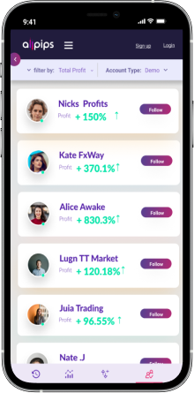
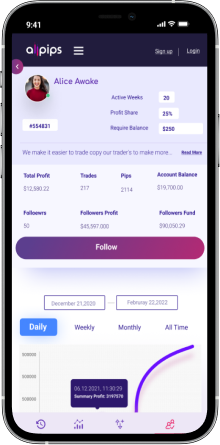
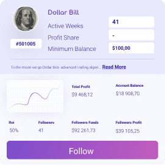
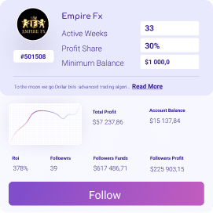
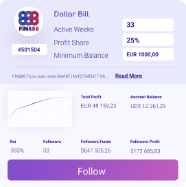
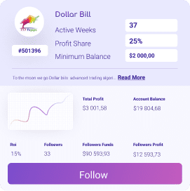
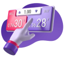
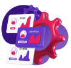
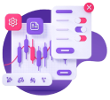

COPY TRADING With Allpips
Discover and copy thousands of experienced traders. Allpips is the global Copy trading platform that allows all type of trades to grow their learning and capital
register nowCopy Top Investor
With Allpip's innovative Copy Trading, you can automatically copy the moves of other investors.Find investors you believe in and replicate their actions in real-time.
Start hereHow Allpips Copy Trading Can Help You ?
Followers
Master Winning Trades From Experts As a Follower, you'll get access to our network of carefully vetted top traders and their trading history, open and close positions automatically based on their strategies, and earn more by following top traders!
Master Traders
Earn Commission From Followers As a Principal Trader, you'll get to build your follower base, gain exposure to a global network of users, and earn percentage -of your followers' net profits.
When They Trade You Trade
Whether you’re a beginner learning the basics or you simply don’t have time to watch the markets, now it’s easy to leverage other traders’ expertise. With Allpips Copy Trading, you can automatically copy top-performing traders, instantly replicating their trading in your own portfolio.
80,04%
Thousands of clients are already using Allpips products and services.
Here's How to Start Copy Trading
-
Choose A Trader
1
Uncover top-performing traders by browsing profiles, stats, win ratios, and more.
-
Set Your Account

2
Select a trader with a required balance that fixes your balance and profit share that's good for you.
-
Click "Follow"
3
Tap on the trading expert you want to follow. Now when they place a trade, so do you!
Wide variety of instruments
Whether you CopyTrade or Trade manually, we support the trading of Currency Pairs, Stocks, Indices, Metals, and Crypto. If you are an advanced investor and prefer manual trading, you are always able to customize your settings or trade with a variety of advanced tools.
Get Started NowAllpips Top Traders
Here are some of Allpips most popular Principal Traders who have a healthy track record of wins.
- 
- 
- 
- 
Why do so many traders choose Allpips?
Thousands of clients are already using Allpips products and services. Find out the benefits of the Allpips platform and why you should join the Allpips social trading community
-

Transparent
All the trades, profits and losses are highlighted to make sure you have everything you need to make the right choice.
-

Automated
Once you join as a Follower and pick a Principal Trader to follow, the copying and execution of trades are automatic.
-

Zero fees
As a Follower, all you need to do is make a deposit and you're ready to go!
-

Innovation
Our in-house team constantly analyzes your needs, to provide new features and optimize your trading experience, always thinking outside the box!
Frequently Asked Questions (FAQ)
Copy trading can be done by connecting your MT4 trading account to the Axi Copy Trading app. From the app, you can explore the community of traders online – filter by things like profitability, asset type and level of risk – to find traders whose trades you want to copy.
Once you have found a suitable trader, you can adjust individual trade settings to a level of risk that’s appropriate to you. Once you click ‘Copy’, any time the master trader trades, your account will copy their trades, based on your settings. You are able to follow more than one trader at a time, and you can stop copy trading at any time.
Read our article 'What is Copy Trading?' to get a better understanding!
The Axi Copy Trading app is designed to make it easy to find traders to copy. Within the app, simply search for traders using suggested lists – for example, most profitable traders – or search for an individual trader or group. Once you have found a trader to copy, you can analyses their past trading performance before deciding if you want to copy their trades.
Yes, you can! You have the option to change the amount of money you are investing and the size of each trade before you commit to copying the trade. This allows you to practice a level of risk appropriate to you.